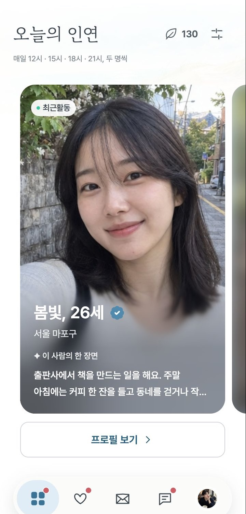
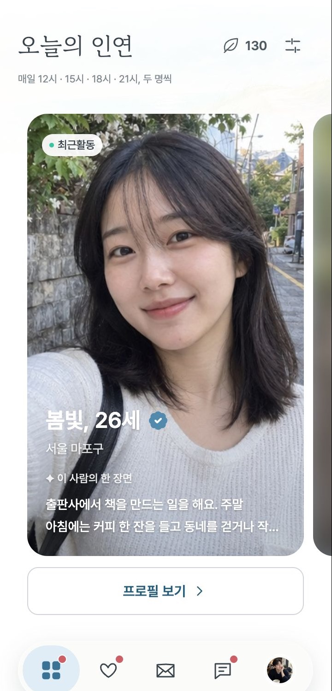
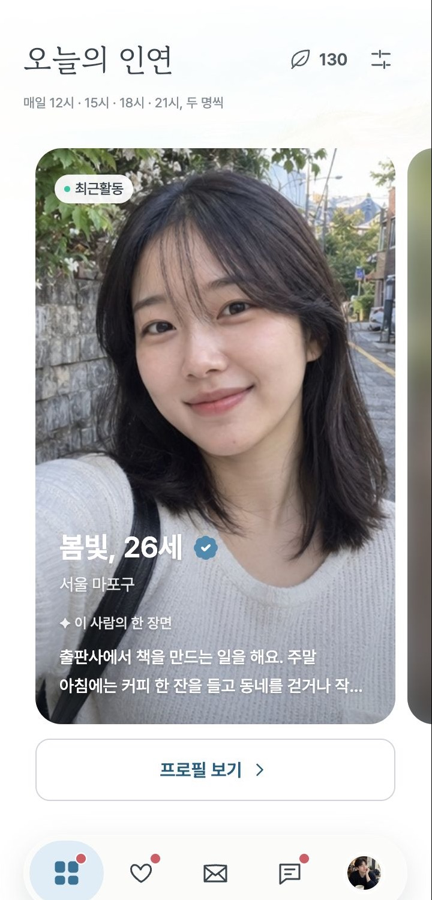
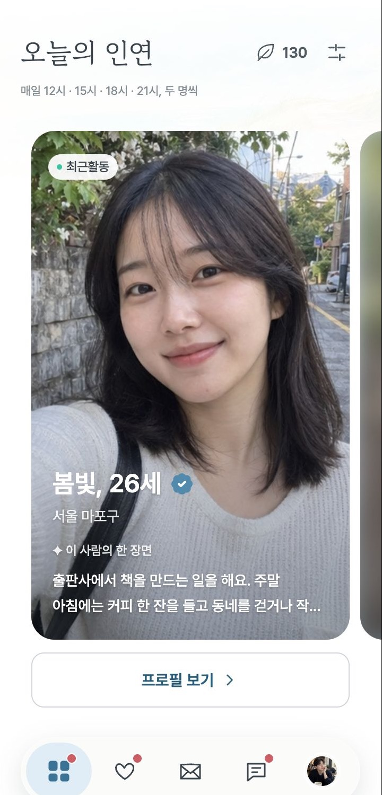

인연 카드 · 사진 아래 블러 없애고 어둠은 아주 살짝
- 지금: 사진 아래쪽 59%부터 흐림 6겹(최대 40px) + 어두운 그라데이션(50% → 80%에서 42%).
- 세 안 공통: 흐림은 모두 빼요. 레이아웃은 그대로, 오버레이만 참고 이미지처럼 사진이 끝까지 또렷하게. 흰 글자에 아주 옅은 그림자(0 1 2, 22%)를 더해 밝은 사진에서도 읽히게.
- G1 가장 옅게: 55%부터 바닥 22%. 참고 이미지와 가장 비슷해요. 밝은 옷 · 배경이면 두 줄 소개 글이 조금 약해요.
- G2 살짝: 50%부터 72%에 14% → 바닥 32%. 사진은 거의 그대로, 글은 안정적으로 읽혀요.
- G3 조금 더: 45%부터 70%에 20% → 바닥 42%(지금 진하기를 아래로만 모음).
지금 사진(어두운 배경)
지금흐림 + 어둠G1가장 옅게G2살짝G3조금 더
밝은 사진(흰 옷)일 때

지금흐림 + 어둠
G1가장 옅게
G2살짝
G3조금 더